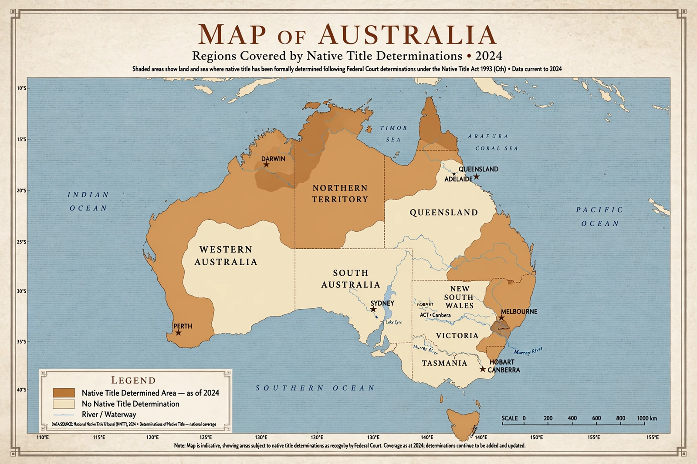

Native title is the common law doctrine by which Indigenous peoples of Australia — Aboriginal Australians and Torres Strait Islanders — hold rights and interests in land and waters derived from their traditional laws and customs, recognised by Australian law where those rights have not been extinguished by valid government action.
For two centuries after British settlement in 1788, Australia was treated in law as terra nullius — land belonging to no one — and native title was denied, a position upheld as late as the 1971 Milirrpum v Nabalco (Gove land rights) case. Hopes for change grew with the 1967 referendum, the Aboriginal Land Rights (Northern Territory) Act 1976, and Queensland litigation over the Torres Strait.
In 1992 the High Court of Australia decided Mabo v Queensland (No 2), brought by Eddie Mabo and other Meriam people of Murray Island. By six votes to one the Court rejected terra nullius, holding that native title survived the acquisition of sovereignty and could be extinguished only by clear and plain sovereign acts inconsistent with its continued enjoyment.
Parliament responded with the Native Title Act 1993 (Cth), which established the National Native Title Tribunal, a process for making and determining claims, and a "future act" regime governing mining, pastoral leases and other dealings with native title land. The Keating government described the Act as a balance between recognising Indigenous rights and providing certainty for industry.
In Wik Peoples v Queensland (1996) the High Court held that pastoral leases did not necessarily extinguish native title, and the two could co-exist. The Howard government's response, the Native Title Amendment Act 1998 based on its "ten point plan", was fiercely contested and validated many intermediate acts while tightening registration and extinguishment rules.
Claimants must prove they hold rights under traditional laws and customs that have been substantially maintained, without interruption, since sovereignty. In Members of the Yorta Yorta Aboriginal Community v Victoria (2002) the High Court confirmed this strict continuity requirement, which has defeated claims in long-settled regions. Successful determinations now cover a large proportion of the Australian land mass — particularly in Western Australia, the Northern Territory and Queensland — though the rights recognised vary from exclusive possession to non-exclusive rights of access, hunting, fishing and ceremony.
Negotiated settlements have become common: Indigenous Land Use Agreements (ILUAs) between native title groups, governments and miners underpin many major resource projects, and comprehensive settlements such as the Noongar settlement in south-west Western Australia have resolved claims over large regions by agreement rather than litigation.